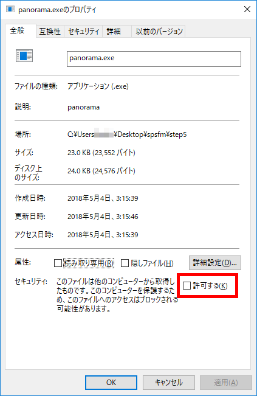
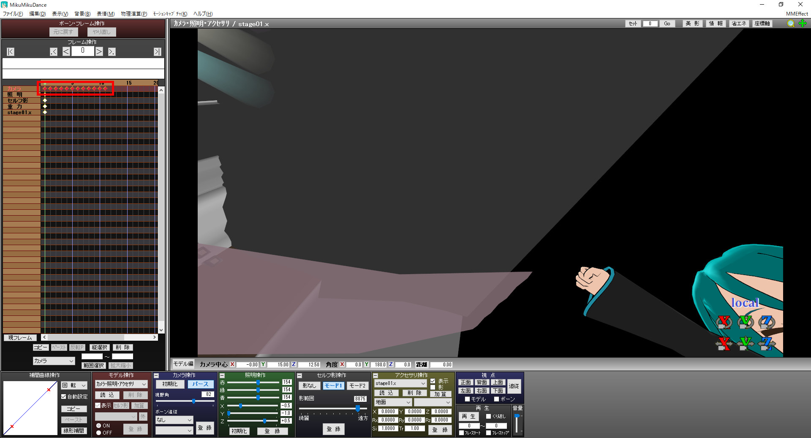

simple-panorama-stitcher-for-mmd
simple-panorama-stitcher-for-mmdは、MMD（またはMMM）で360°パノラマ静止画を作るためのツールです。
ここからダウンロードできます。
このガイドに沿って作成を進めていくと、360°パノラマ静止画を作って公開することができます。
このガイドはWeb版とダウンロード版（上記ダウンロードリンクに同梱）があり、どちらも同じ内容です。
このガイド内でMMDについて言及している事項は、特記しない限りMMMにも適用可能です。
このガイドは以下のような構成になっています。
- ステップ0：どんなものが作れるか確認しよう
- ステップ1：必要なソフトをインストールしよう
- ステップ2：MMDの物理を切ろう
- ステップ3：カメラモーションを作成しよう
- ステップ4：録画しよう
- ステップ5：360°パノラマ静止画を作ろう
- ステップ6：360°パノラマ静止画を閲覧しよう
- ステップ7：360°パノラマ静止画を公開しよう
ステップ0：どんなものが作れるか確認しよう
下のような画像を360°パノラマ静止画と呼びます。

これ単体ではただの歪んだ画像ですが、この画像を特殊なビューアで読み込むことにより、360°ぐりぐり回して風景を楽しむことができるようになります。
いろいろなフリーソフトやスマホアプリをビューアとして使うことができますが、このガイドではA-Frameという技術を使って作られたビューアをおすすめしていきます。
上記ビューアを試してみるには、リンク先に飛んで、step0フォルダの中にあるpanorama.pngを読み込んでみるとよいでしょう。
{kind=link}
さらに、このガイドに従うと、上記ビューアにあらかじめ画像を読み込ませた状態のものをWeb上へ公開することができます。
例えば以下のようにすると、あなたが作った360°パノラマ静止画を皆に共有することができます。
もっと詳しい説明
MMDで360°パノラマ静止画を作る方法はこれまでにも存在していましたが、このツールの新しい点は、手法がシンプルであるがために既存のエフェクトと相性がよいという点です。
例えば今までにあった手法では、ray-mmdを使いながら360°パノラマ静止画を作ることは困難でした。
このツールは360°パノラマ静止画を作るために、MMD上でカメラを360°回転させて、撮影した画像を後から合成するという手法をとっています。
既存のエフェクトにほとんど特殊な要求をしないので、自然な感覚で360°パノラマ静止画を作ることができます。
注意事項
ほぼ唯一の制限として、時間に依存して変化が起こるエフェクトとは相性が悪いです。（例: 桜の花びらが散るパーティクル系エフェクトなど）
該当エフェクトを改造して時間による変化が起きないようにすればよいのですが、難しいかもしれません。
注意事項
以前、MMDで360°パノラマ静止画を作るというのは、モデラーさんらが想定していない使い方にあたるのではないか（だから個別に許可をとる必要があるのではないか）という議論がなされたことがあります。
各モデルやエフェクトなどの規約をよく読むのは当然のことですが、その上でもしあなたが必要と考えるのであれば、個別に許可をとってください。
ステップ1：必要なソフトをインストールしよう
このツールを使うのに必要なソフトは以下の3つです。
このツールを使うような人はMikuMikuDanceないしMikuMikuMovingは普通に持っているでしょうし、.NET Framework 4.7.1のインストールも簡単にできると思います。
FFmpegのインストールはつまづきやすいかと思いますので、詳細に説明します。
https://www.ffmpeg.org/にアクセスしたら、以下のようにして赤枠で囲まれた部分をクリックしていってください。
画像2枚目と3枚目の中央に鎮座している大きなDownloadアイコンはプログラマ向けのものであって、我々ただのユーザー向けのものではないので、間違えてクリックしないようにしてください。
FFmpegをダウンロードする前の最後の画面が以下です。
ここではバージョンとして下の方（安定版）を選んでください。
Windows 64-bitかWindows 32-bitかはお使いのOSに応じて選んでください。
LinkingはStaticにしてダウンロードします。
ダウンロードしたら中身を適当な場所に解凍してください。
解凍したら、binフォルダの中にあるffmpeg.exeをコピーして、このツールのstep5フォルダの中に置いてください。
それが済んだら、ffmpeg.exeが入っていた元のフォルダは消してもよいです。
最後に、step5フォルダの中にあるffmpeg.exeとpanorama.exeのそれぞれについて、右クリック→プロパティから「許可する」にチェックを入れて適用を押すようにしてください。

ステップ2：MMDの物理を切ろう
ステップ2～4の説明はMMDをベースに行います。
MMMユーザーの方は適当に読み替えてください。
このツールはカメラを360°回転させてパノラマ静止画作りに必要な情報を撮る関係上、カメラが回転している間にスカートや髪が揺れ動いてしまうと正しく360°パノラマ静止画を作れなくなってしまいます。
それを防ぐために物理演算を切っておきます。
単純に物理演算を切るだけだとスカートや髪が初期状態のままになってしまうので、物理演算結果を記録しておく（物理焼き込み）ようにします。
物理焼き込みにはいろいろな方法がありえますが、ここでは最も単純なものを説明します。
物理演算に詳しい方は自分なりに方法をアレンジしてもよいです。
モデル操作モードに入ったら、上のメニューから、物理演算→物理影響ボーン選択、を選びます。
「物理」ボタンをクリックして、「物理」ボタンが青く光っていない状態にしてください。
そうしたら、「登録」ボタンを押します。
もっと詳しい説明
わかる人向けの説明ですが、髪IKやネクタイIKのような物理影響下にあるIKは、オフにしておいた方がより焼き込みの精度が上がります。
上のメニューから、物理演算→演算しない、を選ぶと、物理演算を切ることができます。
ステップ3：カメラモーションを作成しよう
360°パノラマ静止画を見たときに正面になるカメラの位置、向きを決めてください。
カメラの距離は0にして調整してください。
視野角はなんでもいいですが、大きめの数字にしておいた方が、360°パノラマで見たときに近い見た目になり調整しやすいです。（私は90°で調整しています）
注意事項
よっぽど特殊な意図が無い限り、カメラ角度のXとZは0にしておいた方がよいです。
最終的な360°パノラマ静止画を見たとき、重力方向がどちらかわからなくなり混乱するはずです。
カメラの位置と向きが決まったら、リンク先のページにカメラ中心と角度の値を入力して、「VMD生成」ボタンを押してください。
生成されたvmdファイルを適当な場所に保存しておきます。
生成されたvmdファイルを、ファイル→モーションデータ読込、から読み込んでください。
ずらっとダイヤマークが並んだら成功です。

ステップ4：録画しよう
画面の出力サイズを上のメニューの、表示→出力サイズ、から変更してください。
サイズを512×512にします。
もっと詳しい説明
実際は縦横比が1:1であればなんでもよいです。
適当な名前でaviファイルに出力してください。
録画フレームは先ほどダイヤマークがずらっと並んだ72フレーム分の範囲を指定します。
圧縮コーデックは未圧縮を指定します。
もっと詳しい説明
実際は可逆圧縮コーデックであればなんでもよいです。
ステップ5：360°パノラマ静止画を作ろう
先ほど出力したaviファイルをドラッグして、step5フォルダの中のpanorama.exeの上でドロップしてください。
うまくいくと下のような黒いウィンドウが出るので、100.0%になるまで待ってください。

100.0%になったとき、step5フォルダの中にできているpanorama.pngが360°パノラマ静止画の完成品です。
おめでとうございます。
もっと詳しい説明
100.0%になる前であっても、panorama.pngを見ると合成の途中結果を確認できます。
注意事項
おそらくpanorama.exeを実行しようとするとアンチウィルスソフトに弾かれるのではないかと思います。（そのまま実行できるならそれはそれでよいのですが）
その場合、panorama.exeをアンチウィルスソフトの例外として登録してください。
アンチウィルスソフトに弾かれる理由は、単純にこのツールを実行したことがある人が少ないからです。
別に怪しい処理はさせていません。
ステップ6：360°パノラマ静止画を閲覧しよう
できた360°パノラマ静止画をビューアに読み込ませます。
楽しめましたか？
ステップ7：360°パノラマ静止画を公開しよう
個人のウェブサイトを持っている人は、step7フォルダの中にあるviewer.htmlを、ステップ5で作ったpanorama.pngと共にアップロードすれば終わりです。
お疲れさまでした。
ここから先は個人のウェブサイトを持っていない人向けの説明です。
Glitchというサービスを使うと、360°パノラマ静止画をぐりぐり見渡せる形で公開することができます。
Glitchのインターフェースはすべて英語ですが、使い方自体は単純なのでどうか怯まないでください。
まずはこのリンク先に飛んでください。
画面中ほどにある「Remix your own」ボタンを押します。
しばし待ちます。
画面が下のようになったら、公開したい360°パノラマ静止画をページの上にドラッグアンドドロップします。
assetsをクリックします。
画面中央に自分が追加したファイルがあるので、それをクリックしたら、「Copy Url」ボタンを押します。
index.htmlをクリックします。
a-sceneタグの中身を消します。
a-sceneタグの中身に<a-sky src=""></a-sky>と書いてください。
"と"の間に先ほど「Copy Url」でコピーしたURLを貼りつけてください。
注意事項
入力する文字はすべて半角です。
スペースのあるなしにも注意しましょう。
Shareをクリックします。
Share your Appの段にある「Copy」ボタンを押します。
今やあなたのクリップボードにはビューアの公開用URLがコピーされています。
さっそく動作確認するなり他の人に共有するなりしてみてください。
注意事項
Glitchはこのように匿名ユーザーでも公開用ページを作ることができますが、その代わりアカウントを作らない限り5日間でページが消えます！
Glitchのアカウントを作るにはFacebookアカウントが必要です！
Facebookアカウントがある場合、画面右上の「Sign in」ボタンを使えばすぐにアカウント作成を終えることができます。
アカウントを作った時点でページが永続化されます。
他に何か特別な操作は要りません。
注意事項
作った360°パノラマ静止画を公開する場合、公開用URLのほかに普通の画像とセットで公開することをおすすめします。
URLだけでは誰も見向きもせず、せっかく作ったあなたの360°パノラマ静止画が埋もれてしまうはずです。
FAQ
動画は作れないの？
今のところ作れません。
将来的に対応するかもしれないししないかもしれません。
もっと大きいサイズの静止画は作れないの？
今のところ作れません。
将来的に対応するかもしれないししないかもしれません。
利用規約は？
ありません。
あなたが使っているモデルやエフェクトなどの利用規約が許す限りにおいて、このツールもしくはこのツールを利用して作ったファイルをどのような用途へ利用しても構いません。
また、このツール自体の改造も歓迎しています。